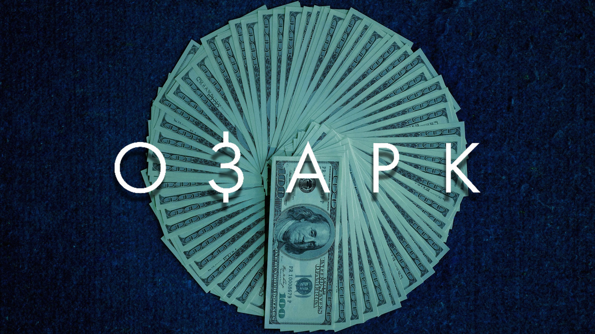

«Озарк» (англ. Ozark) — американський кримінально-драматичний вебсеріал, створений Біллом Дюбюком і Марком Вільямсом для Netflix і спродюсований Media Rights Capital. Головні ролі виконують Джейсон Бейтман і Лора Лінні, які грають подружню пару, яка змушена переселити свою сім'ю до Озарка після того, як план з відмивання грошей провалився.
Перехід на наступну сторінку